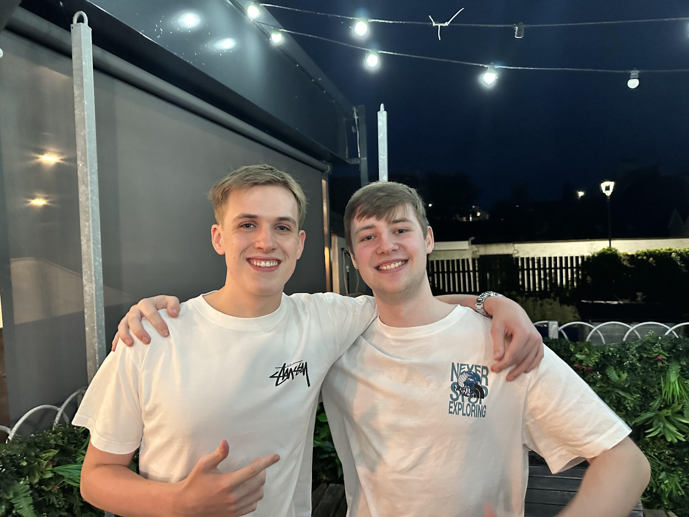

📍 Carrickfergus, NI | Seeking 2027/28 Placements
Hi, I'm Matthew Rollo
Computer Science Undergraduate @ Queen's University Belfast
Passionate about building robust software, database systems, and IT infrastructure.
Focused on delivering practical, hands-on development solutions.
🎓 QUB — Stage 2
⭐ NRC — Level 3 Extended Diploma (DDD)
🚀 Available for Placement 2027/28
About
I am a second-year Computer Science student at Queen's University Belfast,
building a strong practical foundation in software development,
database architecture, network protocols, and systems infrastructure.
Prior to QUB, I completed a Level 3 Extended Diploma in Computer Science at
Northern Regional College (NRC), where I developed hands-on competencies in
local virtual machine deployments, system diagnostics, and relational database
management.
Outside of tech, I prioritize personal discipline and consistency—whether that is
maintaining a dedicated fitness routine, playing competitive badminton, or organizing a local
5K community run in memory of my Nanny that raised over £2,000 for Pancreatic Cancer Northern Ireland.
